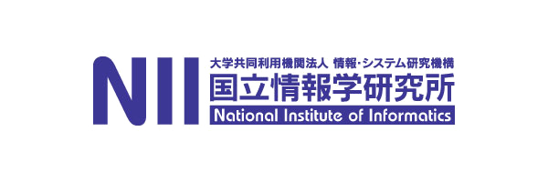
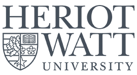
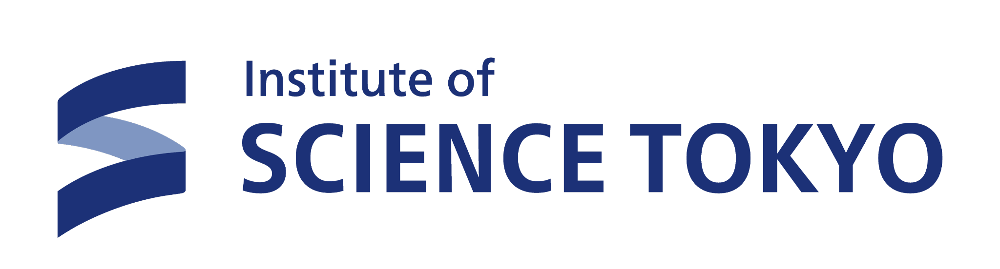
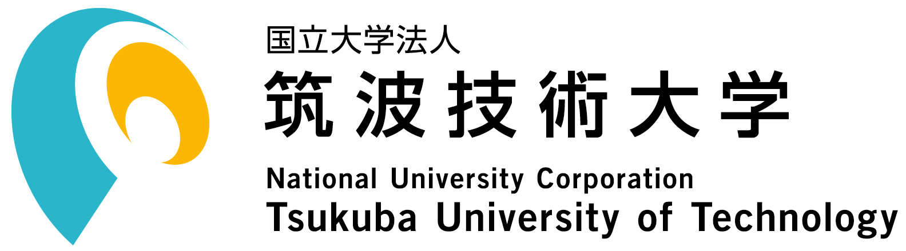
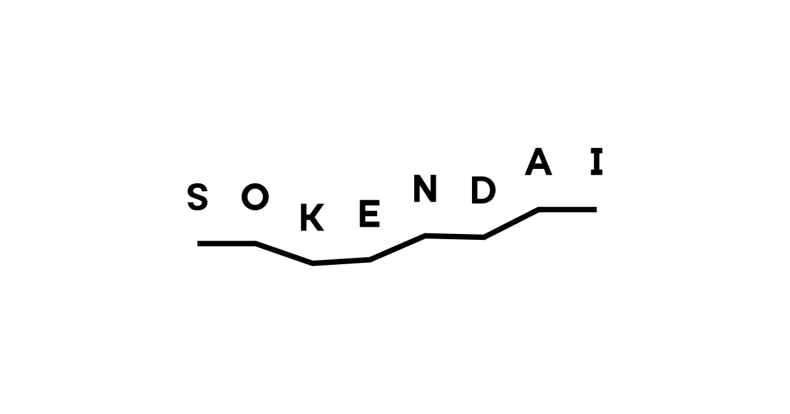

Sign languages in their own right
Sign languages and multimodal resources are full scientific objects — not simplified stand-ins for spoken language.
UMCS
UMCS is a UK–Japan research project developing real-time translation and learning technologies that bridge spoken and signed languages, starting with British Sign Language (BSL), Japanese Sign Language (JSL), English, and Japanese. Our goal is equitable, accessible communication for Deaf and hearing people alike, across languages and cultures.
Watch in Sign Language
To truly support Deaf communities, AI needs to recognize not just signs — but the people who are using them collaboratively.
Sign languages and multimodal resources are full scientific objects — not simplified stand-ins for spoken language.
Meaning is built in the moment — through handshape, gaze, touch, and space, with vocabulary invented on the fly and misunderstandings repaired as they go.
Deaf researchers and community members help decide what gets studied, how, and what the results mean — as co-researchers, advisors, and decision-makers, from the start.
AI and corpus tools built for the real structure of sign and tactile interaction — not retrofitted from speech pipelines.
Led by Mayumi Bono (NII) and Richard Bowden (Surrey), with Co-PIs at UCL, Heriot-Watt, Kyoto University, and Institute of Science Tokyo — plus early-career researchers across eight institutions in the UK and Japan.
Mayumi Bono
PI, NII / SOKENDAI
Richard Bowden
PI, University of Surrey
Annelies Kusters
Co-PI, Heriot-Watt
Kearsy Cormier
Co-PI, UCL
Robert Adam
Co-PI, Heriot-Watt
Koji Inoue
Co-PI, Kyoto University





UMCS is a UK–Japan collaborative research project, supported by UKRI/EPSRC in the UK and by JST ASPIRE in Japan.